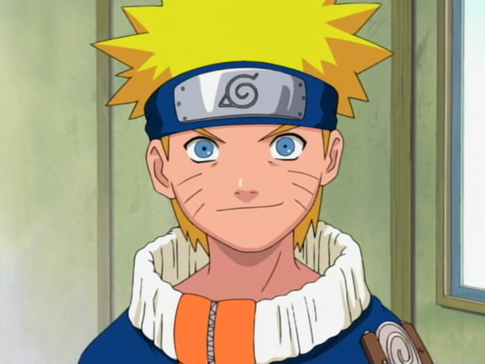

Naruto Uzumaki
he is a young ninja from the fictional village of Konohagakure. The villagers ridicule Naruto on account of the Nine-Tailed Demon Fox a malevolent creature that attacked Konohagakure that was sealed away in Naruto's body. Despite this, he aspires to become his village's leader, the Hokage. His carefree, optimistic and boisterous personality enables him to befriend other Konohagakure ninja, as well as ninja from other villages.